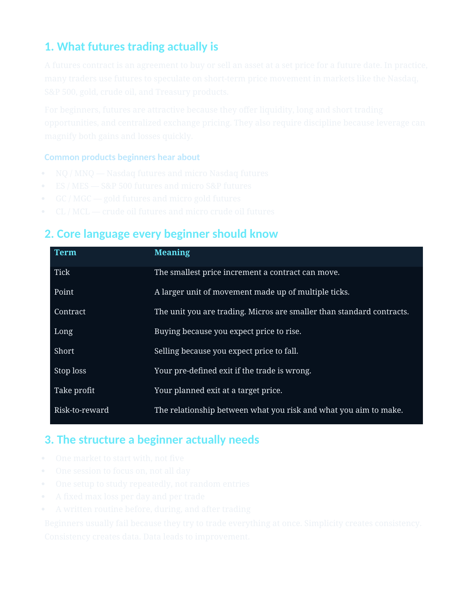

Futurithm Resource Library
Practical trading resources built to guide beginners toward structure and consistency.
The Futurithm resource library helps traders learn faster with downloadable guides, planning tools, challenge preparation materials, and credibility-focused educational assets.
Featured Download
Beginner’s Guide to Futures Trading
A lead-generation guide created to help new traders understand the basics of futures markets while entering the Futurithm ecosystem through a valuable first step.
Format
PDF
Purpose
Lead Magnet
Downloads
Downloadable resource library
PDF Guide
Beginner’s Guide to Futures Trading
A foundational guide designed to help new traders understand futures markets, leverage, sessions, and beginner risk management.
Framework
Risk Management Guide
A practical resource focused on position sizing, loss limits, consistency, and protecting trading capital.
Strategy Resource
Prop Firm Challenge Guide
A simple breakdown of how evaluations work, common rules, and how traders can approach funded-account challenges with discipline.
Template
Trading Plan Template
A structured template traders can use to define their process, setups, risk limits, and review routine.
Beginner Education
Start with simple resources that explain the foundations before moving into more advanced concepts.
Execution Support
Use structured guides and templates to apply the Futurithm Method with more discipline.
Challenge Preparation
Study resources designed to help traders understand prop firm rules and maintain consistency.
Proof
Educational credibility and verified results
The Futurithm resource library also supports credibility by pairing education with verified payout examples and funded-trader proof shown elsewhere on the platform.
Apex Trader Funding
$2,750 payout
TakeProfit Trader
Funded trader certificate
Additional Payouts
Multiple verified payout examples

